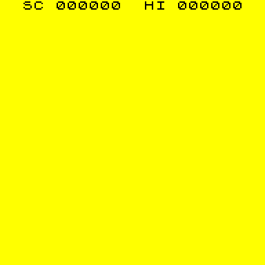
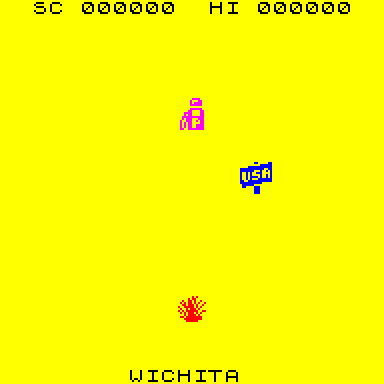

| Routines |
| Prev: 27458 | Up: Map | Next: 27606 |
|
Used by the routine at HandlerPlayer.
Goes through the map points (MapPoints), from the one that CurrentObject points to, and draws each one that is in view of the player's car. The map points are in order of their X position, so it stops at the first one which is more than 96 map units away horizontally. Map points which are too far away vertically are skipped.
|
||||
| DrawObjects | 27463 | LD BC,(24089) | Fetch the first map point that might be in view (CurrentObject). | |
|
Handle the next map point. A' is used to hold flags which say which side of the player's car the map point is on; bit 1 is set when it is to the right and bit 0 is set when it is higher up the map.
|
||||
| DrawObjects_Next | 27467 | XOR A | Prepare to clear the direction flags. | |
| 27468 | EX AF,AF' | Exchange A with A' to clear the flags. | ||
| 27469 | LD A,(BC) | Fetch the X position of the map point. | ||
| 27470 | INC BC | Move on to the Y position of the map point. | ||
| 27471 | LD D,A | Keep the X position in D. | ||
| 27472 | CALL ScaleValue_DivideByEight | Call ScaleValue_DivideByEight to convert it to map units in DE. | ||
| 27475 | LD HL,(24069) | Fetch the player's X position on the map (PlayerMapPosition). | ||
| 27478 | AND A | HL=HL - DE (the horizontal distance to the map point). | ||
| 27479 | SBC HL,DE | |||
| 27481 | JR NC,DrawObjects_CheckRangeX | Jump to DrawObjects_CheckRangeX if the map point is not to the right of the player's car. | ||
| 27483 | CALL NegateHL | Call NegateHL to make the distance positive. | ||
| 27486 | EX AF,AF' | Switch to the flags. | ||
| 27487 | XOR %00000010 | Flip bit 1 (the map point is to the right). | ||
| 27489 | EX AF,AF' | Switch back. | ||
| DrawObjects_CheckRangeX | 27490 | PUSH HL | Stash the distance on the stack. | |
| 27491 | EX DE,HL | Keep the distance in DE. | ||
| 27492 | LD HL,96 | Set the furthest distance in view, 0096. | ||
| 27495 | AND A | Take the distance away from the furthest distance in view. | ||
| 27496 | SBC HL,DE | |||
| 27498 | POP HL | Restore the distance (HL) from the stack. | ||
| 27499 | RET C | Return if the map point is more than 96 units away horizontally. | ||
| 27500 | LD A,L | Fetch the horizontal distance (the low byte). | ||
| 27501 | LD (24087),A | Store the horizontal distance in Object_Distance_X. | ||
| 27504 | LD A,(BC) | Fetch the Y position of the map point. | ||
| 27505 | INC BC | Move on to the sprite ID of the map point. | ||
| 27506 | LD D,A | Keep the Y position in D. | ||
| 27507 | CALL ScaleValue_DivideBySixteen | Call ScaleValue_DivideBySixteen to convert it to map units in DE. | ||
|
Pick the attributes for the objects; they depend on the time of day.
|
||||
| 27510 | LD A,(24131) | Fetch the day/night flag (Flag_DayNight). | ||
| 27513 | AND A | If it is day time then jump to SetDayObjectAttributes. | ||
| 27514 | JR Z,SetDayObjectAttributes | |||
| 27516 | LD HL,27606 | Point HL at the night time object attributes (NightObjectAttributes). | ||
|
This entry point is used by the routine at SetDayObjectAttributes.
|
||||
| DrawObjects_Sprite | 27519 | LD A,(BC) | Fetch the sprite ID of the map point. | |
| 27520 | INC BC | Move on to the next map point. | ||
| 27521 | LD (24095),A | Store the sprite ID in ActiveObject. | ||
|
Cups, place names and collected cups all use the first attribute.
|
||||
| 27524 | CP 32 | Jump to DrawObjects_FirstAttribute if this is a cup (32). | ||
| 27526 | JR Z,DrawObjects_FirstAttribute | |||
| 27528 | CP 64 | Jump to DrawObjects_FirstAttribute if this is a place name or a collected cup (64 or more). | ||
| 27530 | JR NC,DrawObjects_FirstAttribute | |||
| 27532 | ADD A,L | Add the sprite ID to the pointer to find the attribute for this sprite. | ||
| 27533 | LD L,A | |||
| 27534 | LD A,H | |||
| 27535 | ADC A,0 | |||
| 27537 | LD H,A | |||
| DrawObjects_Attribute | 27538 | LD A,(24132) | Fetch the background attribute (Background_Attribute). | |
| 27541 | OR (HL) | Merge the colour of the object with the background. | ||
| 27542 | LD (24130),A | Store the attribute of the object in ObjectAttribute. | ||
| 27545 | LD HL,(24072) | Fetch the player's Y position on the map (PlayerMapPositionY). | ||
| 27548 | AND A | HL=HL - DE (the vertical distance to the map point). | ||
| 27549 | SBC HL,DE | |||
| 27551 | JR NC,DrawObjects_CheckRangeY | Jump to DrawObjects_CheckRangeY if the map point is not higher up the map than the player's car. | ||
| 27553 | CALL NegateHL | Call NegateHL to make the distance positive. | ||
| 27556 | EX AF,AF' | Switch to the flags. | ||
| 27557 | XOR %00000001 | Flip bit 0 (the map point is higher up the map). | ||
| 27559 | EX AF,AF' | Switch back. | ||
| DrawObjects_CheckRangeY | 27560 | PUSH HL | Stash the distance on the stack. | |
| 27561 | EX DE,HL | Keep the distance in DE. | ||
| 27562 | LD HL,96 | Set the furthest distance in view, 0096. | ||
| 27565 | AND A | Take the distance away from the furthest distance in view. | ||
| 27566 | SBC HL,DE | |||
| 27568 | POP HL | Restore the distance (HL) from the stack. | ||
| 27569 | JR C,DrawObjects_Next | Jump to DrawObjects_Next if the map point is more than 96 units away vertically. | ||
| 27571 | LD A,L | Fetch the vertical distance (the low byte). | ||
| 27572 | LD (24088),A | Store the vertical distance in Object_Distance_Y. | ||
|
Use the flags to look up the quadrant of the map point.
|
||||
| 27575 | EX AF,AF' | Switch to the direction flags. | ||
| 27576 | LD E,A | Use the direction flags as the index into the quadrant table. | ||
| 27577 | LD D,0 | Clear the high byte of the index. | ||
| 27579 | LD HL,27599 | Point HL at the quadrant table (DrawObjects_QuadrantTable). | ||
| 27582 | ADD HL,DE | Add the index to the start of the table. | ||
| 27583 | LD A,(HL) | Fetch the quadrant. | ||
| 27584 | LD (24083),A | Store the quadrant in Object_Quadrant. | ||
| 27587 | LD (24122),BC | Store the map point pointer in ObjectMapPointer. | ||
| 27591 | PUSH BC | Stash BC on the stack. | ||
| 27592 | CALL PlaceObject | Call PlaceObject to place the object on the screen. | ||
| 27595 | POP BC | Restore BC from the stack. | ||
| 27596 | JP DrawObjects_Next | Jump to DrawObjects_Next. | ||
|
The quadrant for each combination of the flags in A'. Bit 1 of the quadrant is set when the object is to the left of the player's car.
|
||||
| DrawObjects_QuadrantTable | 27599 | DEFB 2,3,1,0 | ||
|
Use the first attribute for cups, place names and collected cups.
|
||||
| DrawObjects_FirstAttribute | 27603 | XOR A | A=0 (this has no effect, as A is loaded again below). | |
| 27604 | JR DrawObjects_Attribute | Jump to DrawObjects_Attribute. | ||
| Prev: 27458 | Up: Map | Next: 27606 |

